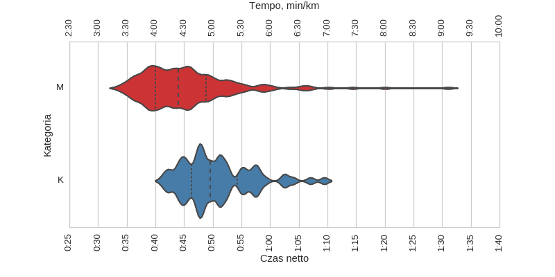
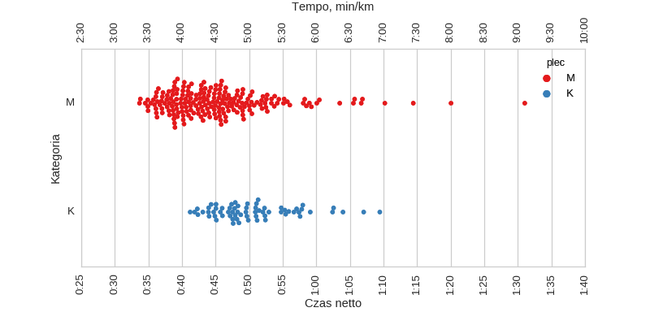

Grand Prix Warszawy (2016-03-19)
Histogramy
kobiety

mężczyźni

wszyscy

Wykresy rybkowe
wg płci


| czas | count | |||||||
|---|---|---|---|---|---|---|---|---|
| mean | std | min | 25% | 50% | 75% | max | ||
| plec | ||||||||
| K | 0:50:36 | 0:06:08 | 0:41:13 | 0:46:14 | 0:49:33 | 0:54:18 | 1:09:27 | 66 |
| M | 0:45:26 | 0:08:12 | 0:33:40 | 0:39:56 | 0:44:02 | 0:48:51 | 1:31:02 | 207 |
Menu
HistogramyWykresy rybkowe
∙ wg płci
Liczba uczestników: 273
Wygenerowano: 2016-03-25 20:33:12.276453